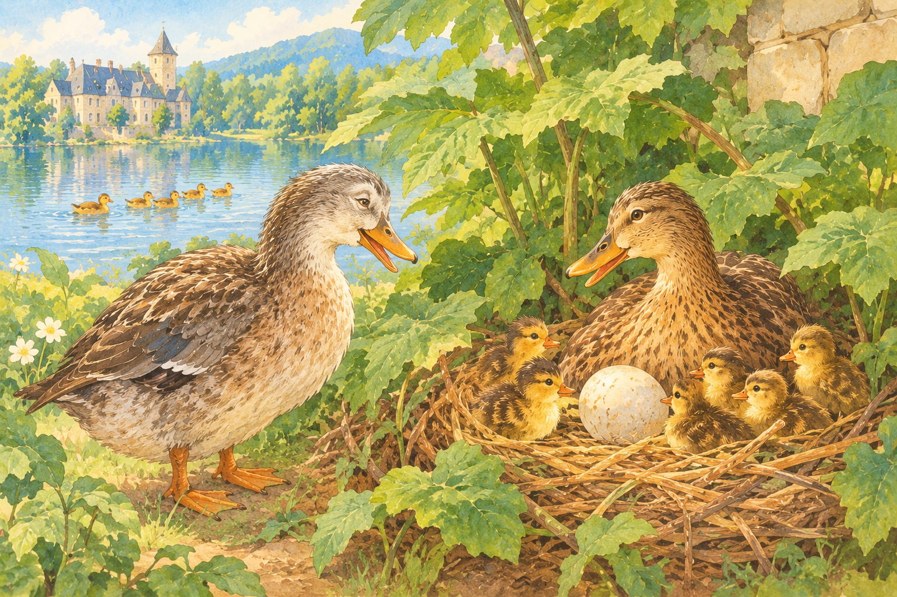

“자, 어찌 되어 가고 있어요?” 한 나이 든 오리가 찾아와 물었다.
어미는 하나 남은 알에 앉아서 말했다. “알 하나가 꽤 오래 걸리네요. 갈라질 생각을 안 해요. 그래도 다른 녀석들 좀 보세요. 최고로 귀여운 아이들이에요. 자기 아빠를 꼭 빼닮았어요. 참! 이런 나쁜…! 남편은 털끝조차 안 비치네!”
노인 오리가 말했다. “아직 갈라지지 않는다는 그 알 좀 들여다봅시다. 이런, 칠면조 알이네. 확실해요. 나도 한번 속았던 적이 있어요. 얼마나 애를 먹었는지 몰라요. 녀석들이 물을 무서워하더라고요. 내가 아무리 악다구니를 쳐도 아무 소용이 없었어요. 그 알 좀 봐요. 확실히 칠면조 알이에요. 내버려 두고 가서 다른 애들한테 헤엄치는 법이나 가르쳐요.”
“아, 조금만 더 앉아 있을게요. 벌써 아주 오랫동안 있었는걸요. 며칠 더 앉아 있는 게 낫겠어요.” “맘대로 해요.” 노파는 어슬렁어슬렁 멀어져 갔다.